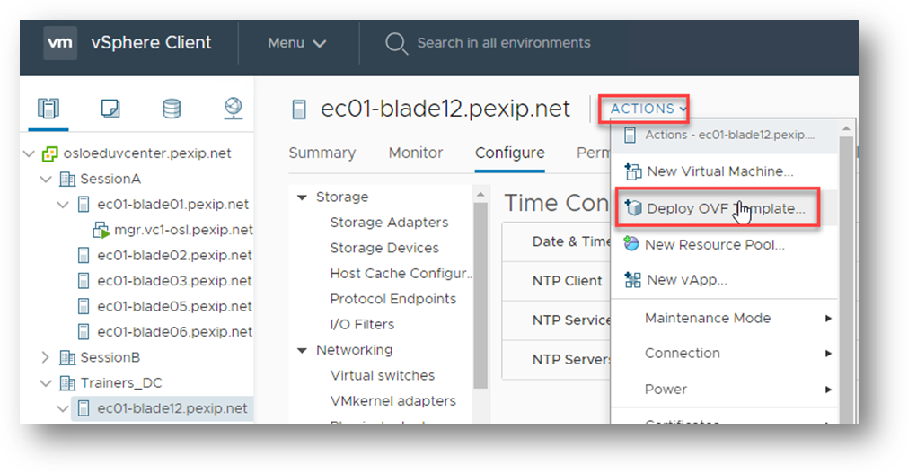
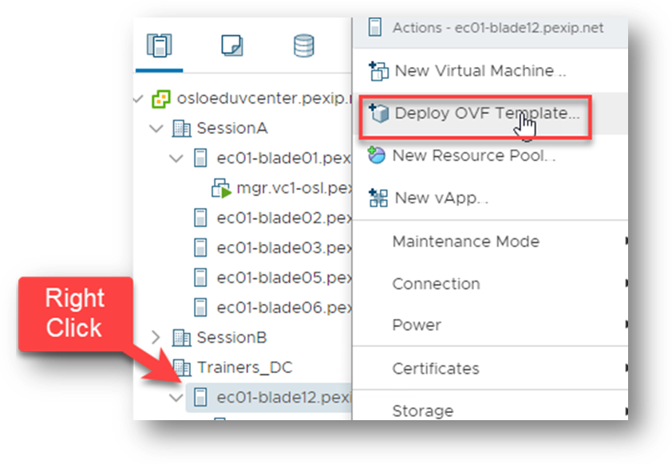
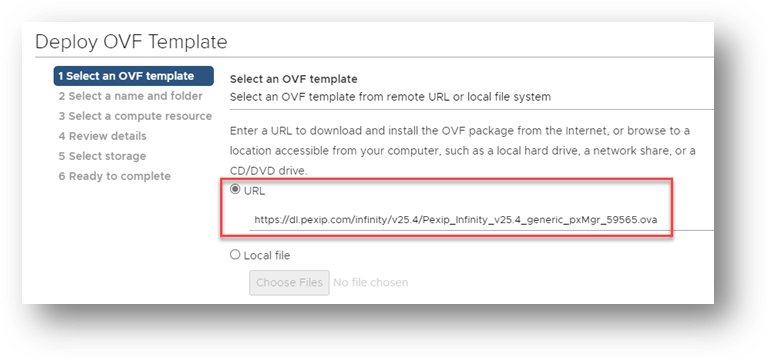
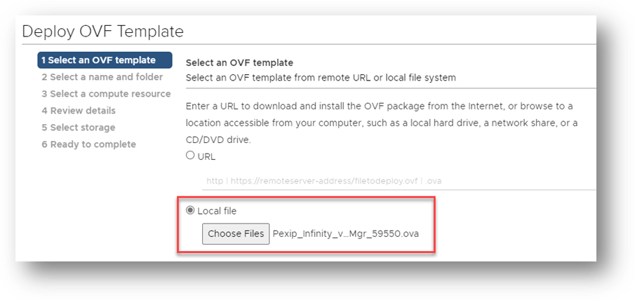
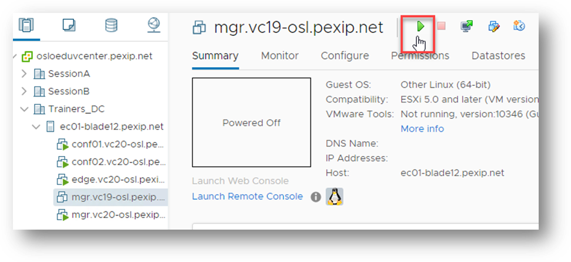
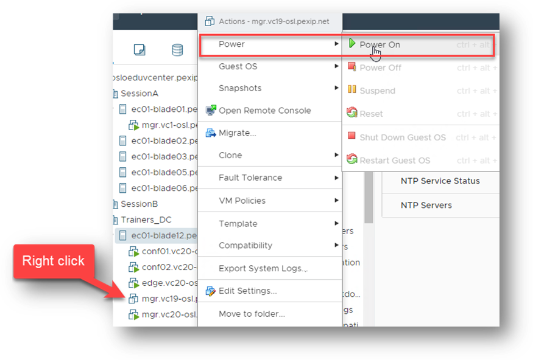
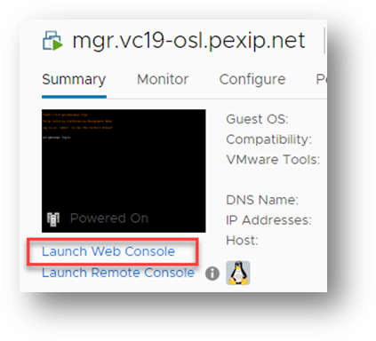

Suggested completion time: 30 minutes

Using section #3 and section #4.1 of the lab sheet
Setting the correct time.
- In your vCentre, open the Data Center for your class (SessionA or
SessionB)
- Select the ESXi host (a blade) that is provided for your group (see section #3 in the
lab
sheet).
- Click the Configure tab for the host, then click on the
System --> Time Configuration section – does the time
need
correction? If so, then click the Edit button. Note the time via the RPD session will
be in
CET/CEST.
- Select “Use Network Time Protocol”, and set the NTP servers as outlined in
the
lab sheet.
- Ensure the “Start NTP Service” tick box is checked.
- Set the NTP Service to “Start and Stop with Host”, then click
OK.
- Recheck the time and make sure it is correct (check the RDP server time).
Deployment and initial configuration of the Management Node
- When logged in to vCenter, find your ESXi host using the information provided in the lab sheet
section #3.
- Select Actions, then Deploy OVF Template (you can also right (or
option)
click on the host and select Deploy OVF template). NOTE: even though
vCentre says “OVF template”, you will be deploying an OVA file.

Or

- To deploy the template:
- You can either deploy directly from a web server (the preferred option) or a local
file.
NOTE: In this lab, you should initially deploy a previous version of
Infinity, which will allow you to see the upgrade process in session 4. Please
ask your trainer what version you should deploy.
- Preferred option: To deploy from a web server, use a previous stable
version of a Generic Management Node (from https://dl.pexip.com/infinity/index.html).
There is a pre-defined bookmark in the browsers via the RDP session.
Find the direct link to the OVA file, then right (or option) click the link, and
copy it (it will look something like https://dl.pexip.com/infinity/v26/Pexip_Infinity_v26_generic_pxMgr_62340.ova.
Select “URL” in the vCentre dialogue, then paste in the URL
link to the correct
file, then click Next.

NOTE: In
reality, you would likely download and install the latest stable version, which is always
linked to the main
Pexip platform download page at https://www.pexip.com/platform-downloads/infinity/current-release.
- Secondary option: Select “Local file” and
browse to the
“E:\Pexip\Group Folders\<Your Group>\Pexip
Software\Deploy” folder.
Select the Management Node OVA and click Next.

- Give the virtual machine a name that matches the FQDN of the node. You can find this on the lab
sheet in
section #4.1, and should combine it as ‘hostname.domain_suffix’. Select
the
Data Centre you are using for your lab (this will be either “Session A”
or
“Session B”), then click Next.
- Select your host as the compute resource.
- Review and continue.
- Accept the license agreement.
- Select the correct datastore (see Lab sheet section #3), Disk
provisioning: Thick Lazy Zeroed. (Note: ALL nodes should be thick
provisioned).
- Select the correct VM network (Lab sheet section
#4.1).
You do NOT need to change
anything
in the “IP allocation settings” – you will set the network details of the node in
the next
step.
- Review the summary and click Finish.
- When the node has deployed, either click the green play icon next to the VM name, or right
(option)
click on it, and select Power --> Power
On.

Or

- When the Management Node is deployed onto the hypervisor and started, click the link
Launch
Web Console in the summary tab below the thumbnail preview.

- Log in with username admin and then set and verify the password to
Pexip123 (this known consistent password allows trainers to help).
- Re-enter the password once more to start the Management Node Installation wizard, then follow the
steps via
the console. If you make a mistake, press Ctrl+C to restart the wizard.
- You will find the IP details for your Management Node on the lab data sheet section
#4.1.
- The hostname is the first part of the management node FQDN, like mgr.<your_group>.pexip.net.
- The domain
suffix is the last part, like mgr.<your_group>.pexip.net.
- Set the web UI credentials to admin / Pexip123 – Please
keep the
password as this so we can help if
required.
(NOTE:
in a real deployment the OS password and web UI password will likely differ, REALLY
IMPORTANT NOTE: The SSH Password is the “Key to your Kingdom” – if you
lose or
forget this, you may have to manually redeploy the entire system in the
future).
- Disable incident reporting and usage statistics (NOTE: this will likely
differ in
the real world).
- When the installation wizard is complete, the Management Node will restart, and you will be able to
reach it
using your browser via the assigned URL/IP. The first time the Management Node powers up it can take
about 5
minutes before the HTTPS service begins responding and displaying the web interface. You will have to
accept
the security warning shown in the browser as the management node only has a self-signed certificate
applied
after creation. NOTE: if the management node goes into a boot loop, likely, it
can’t
reach a specific NTP server so will be unable to set a correct time. If this happens, check the network
that
has been assigned to the vNIC, and that all the details that you have entered into the installation
wizard
are correct.
- Log into the Management node and double check the "Reporting" settings:
- You should have disabled "Incident Reporting" for this lab from the steps above but this may have been overlooked.
Navigate to Platform Settings --> Global Settings --> Reporting and ensure that the "Enable incident reporting" option is unchecked.
IMPORTANT NOTE: in your own (or your customers) Infinity deployments, you would likely want to have this option enabled as it allows Pexip to provide proactive support for your deployment.
- You should also fill in the "Contact email address" field, which should point to a distribution email list:
"Contact email address" = traininglab@pexip.com